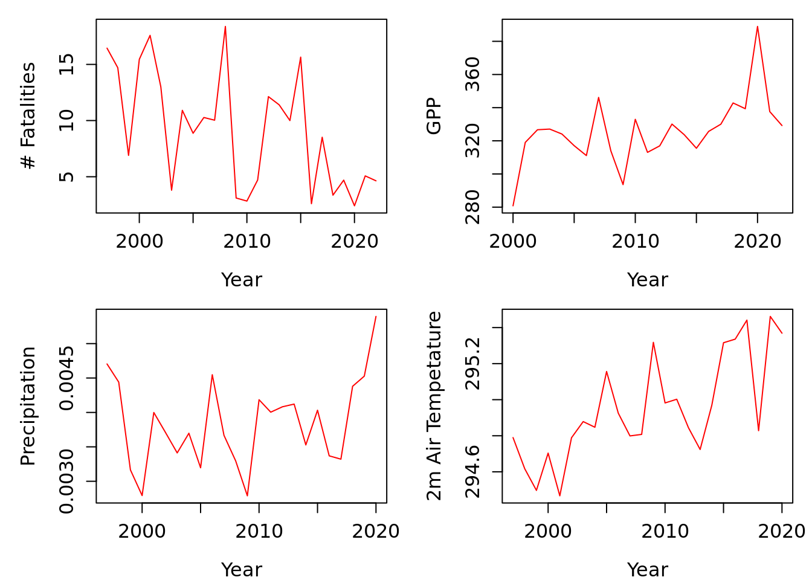
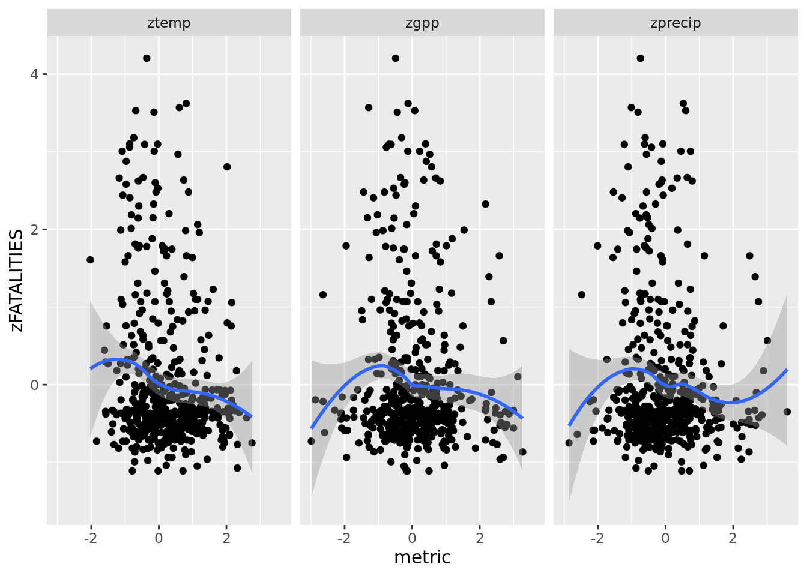
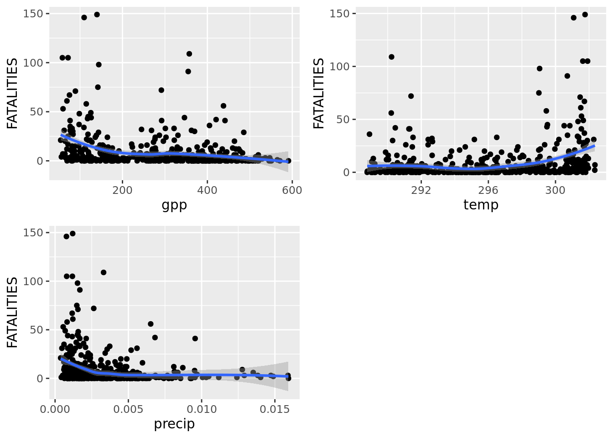

Load necessary packages and define directories.
Load Gross Primary Productivity (GPP) MODIS (2000–2022) and ERA5 (1997–2020) climate metrics computed in Earth Engine and convert to long format. These metrics have been spatially aggregated to county boundaries as depicted by Figure 4 in (Kenduiywo, Ghosh, Hijmans, & Ndungu, 2020).
Format the date variable by removing unnecessary characters.
| County | date | gpp |
|---|---|---|
| Baringo | 2000-02-26 | 130.1147 |
| Bomet | 2000-02-26 | 364.8841 |
| County | date | temp |
|---|---|---|
| Baringo | 1997-01-01 | 297.4850 |
| Bomet | 1997-01-01 | 292.9671 |
| County | date | precip |
|---|---|---|
| Baringo | 1997-01-01 | 0.0001701 |
| Bomet | 1997-01-01 | 0.0008220 |
Temporally aggregate the spatial metrics per year to obtain spatial-temporal climate metrics. Event of conflicts from violence against civilians will also be aggregated per year and county.
gpp$date <- format(as.Date(gpp$date, format="%d/%m/%Y"),"%Y")
gpp <- aggregate(.~County+date, data=gpp, mean, na.rm=T)
tmp$date <- format(as.Date(tmp$date, format="%d/%m/%Y"),"%Y")
tmp <- aggregate(.~County+date, data=tmp, mean, na.rm=T)
prec$date <- format(as.Date(prec$date, format="%d/%m/%Y"),"%Y")
prec <- aggregate(.~County+date, data=prec, mean, na.rm=T)
con <- readRDS("civilianViolence.rds")
con <- subset(con@data, select= c(ADMIN1, FATALITIES, YEAR))
names(con)[1] <- "County"
names(con)[3] <- "date"
con <- aggregate(.~County+date, data=con, sum, na.rm=T)Let’s make some plots and evaluate trends. First merge each jmetric with conflict data. To do so check for county naming consistencies.
con$County <- toupper(con$County)
gpp$County <- toupper(gpp$County)
tmp$County <- toupper(tmp$County)
prec$County <- toupper(prec$County)
c <- sort(unique(con$County))
c[!c %in% sort(unique(gpp$County))]## [1] "ELGEYO MARAKWET" "MURANGA"c[!c %in% sort(unique(tmp$County))]## [1] "ELGEYO MARAKWET" "MURANGA"c[!c %in% sort(unique(prec$County))]## [1] "ELGEYO MARAKWET" "MURANGA"Edit the inconsistencies on the identified counties.
con$County[con$County == "MURANGA"] <- "MURANG'A"
con$County[con$County == "ELGEYO MARAKWET" ] <- "ELGEYO-MARAKWET"We can also compute anomalies for these climate metrics. The Z-score is a good measure to capture anomalies. Z-scores indicate the deviations of seasonal/annual metrics from its long-term annual mean. The unit is “standard deviations”. This a z-score of -1 means that the value is 1 standard deviation below the (expected) mean value i.e.;
zscore <- function(y){
(y - mean(y, na.rm=TRUE) ) / (sd(y, na.rm=TRUE))
}Compute the zScored metrics per year per Country
gpp <- ungroup(mutate(group_by(gpp,County), zgpp=zscore(gpp)))
tmp <- ungroup(mutate(group_by(tmp,County), ztemp=zscore(temp)))
prec <- ungroup(mutate(group_by(prec,County), zprecip=zscore(precip)))
con <- ungroup(mutate(group_by(con,County), zFATALITIES=zscore(FATALITIES)))Make trend plots.
x <- aggregate(FATALITIES~date, data=con, mean, na.rm=T)
y <- aggregate(temp~date, data=tmp, mean, na.rm=T)
z <- aggregate(precip~date, data=prec, mean, na.rm=T)
k <- aggregate(gpp~date, data=gpp, mean, na.rm=T)
par(mfrow = c(2, 2), mar = c(4, 5, 1, 1)) #c(bottom, left, top, right)
plot(FATALITIES~date, data=x, type="l", col="red", ylab="# Fatalities", xlab= "Year", cex.axis =1.2, cex.lab = 1.2)
plot(gpp~date, data=k, type="l", col="red", ylab="GPP", xlab= "Year", cex.axis =1.2, cex.lab = 1.2)
plot(precip~date, data=z, type="l", col="red", ylab="Precipitation", xlab= "Year", cex.axis =1.2, cex.lab = 1.2)
plot(temp~date, data=y, type="l", col="red", ylab="2m Air Tempetature", xlab= "Year", cex.axis =1.2, cex.lab = 1.2)
As we proceed let’s merge all the datasets to one
data.frame
df_list <- list(con, tmp, gpp, prec)
dff <- Reduce(function(x, y) merge(x, y, by=c("County","date")), df_list)Make regression plots to identify relationship between conflicts and various climate EO metrics.
library(ggplot2)
library(gridExtra)##
## Attaching package: 'gridExtra'## The following object is masked from 'package:dplyr':
##
## combineaa <- melt(subset(dff, select=-c(temp, gpp, precip, FATALITIES)), variable.name = "metric_name", value.name = "metric", id.vars = c("County", "date", "zFATALITIES"))
ggplot(aa, aes(metric, zFATALITIES)) +
geom_point() +
geom_smooth(method="loess") +
facet_wrap(~ metric_name)## `geom_smooth()` using formula 'y ~ x'## Warning: Removed 6 rows containing non-finite values (stat_smooth).## Warning: Removed 6 rows containing missing values (geom_point).
#Explore other plots with no anomalies
p1 <- ggplot(dff, aes(gpp, FATALITIES)) +
geom_point() +
geom_smooth(method = "loess")
p2 <- ggplot(dff, aes(temp, FATALITIES)) +
geom_point() +
geom_smooth(method = "loess")
p3 <- ggplot(dff, aes(precip, FATALITIES)) +
geom_point() +
geom_smooth(method = "loess")
grid.arrange(p1, p2, p3, ncol = 2)## `geom_smooth()` using formula 'y ~ x'## `geom_smooth()` using formula 'y ~ x'
## `geom_smooth()` using formula 'y ~ x'
Seems like precipitation is a good indicator of conflicts. For instance, conflicts are high when precipitation is low..